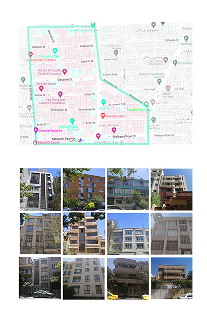
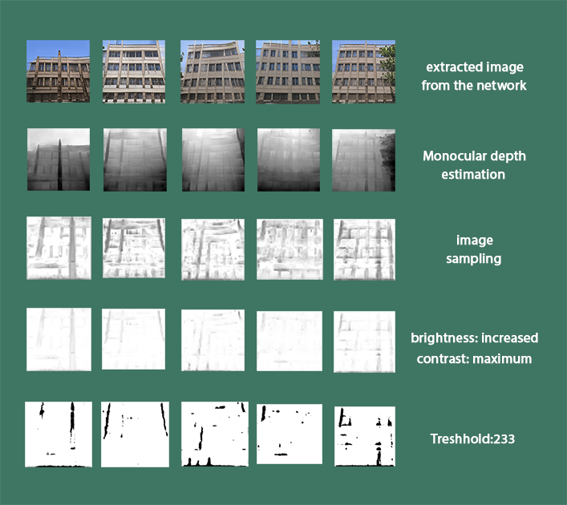
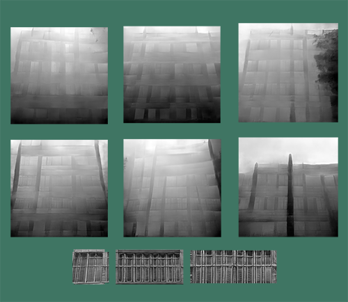
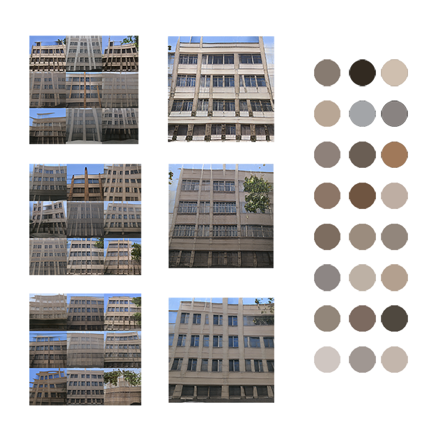

Context is one of the factors
that designers should consider.
When you build a house, you
directly
affect
how people
feel while walking in that
neighborhood. Building facades
are now part of our life
outside
our
house, they have an influence
as powerful as trees and vegetation.
▾


The difference among neighborhoods is undeniable,
but it is not always explainable when we want
to limit
it to facades.
I think it would be helpful to know the
context better to preserve the sense of environment,
while we
are
creating a new architecture.
this is the
selected neighborhood and a fragment of dataset.
▾


most of the facades have strong vertical lines
most facades follow a grid pattern.
The grid pattern can be found also on windows
▾

▾